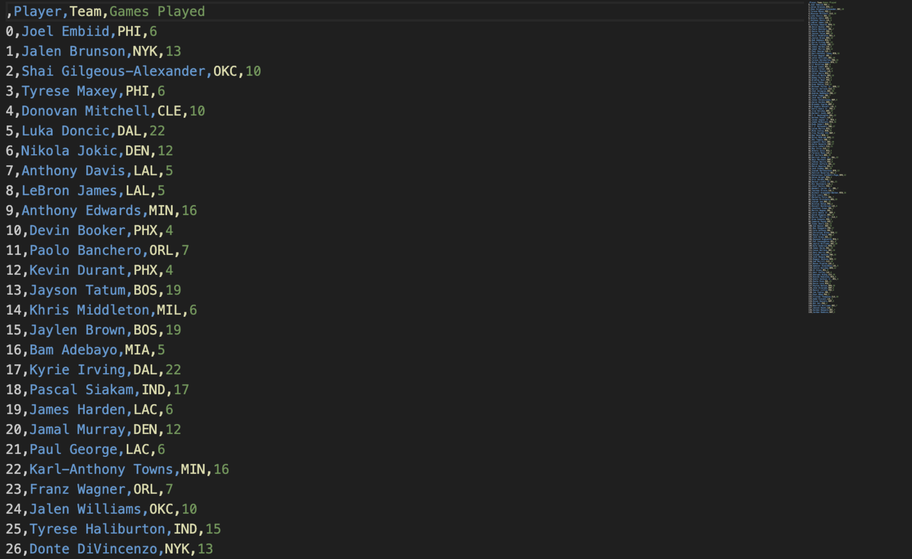

NBA Stats Scraper Demo
Let's scrape the https://www.nba.com/stats/leaders site! As you can see, the site is filled with players and stats for each player.

First input the site URL into the URL input box.

Now let's figure out what we want to scrape. Let's say I want to scrape the player name, their team, and the number of games they played (gp). We must first find what the repeating HTML is for each player in the table rows. So let's open up the page source.
As you can see, each player and their stats are in a <tr> tag with no class name. So let's input the initial values as this.
Next, let's find the locations of the data we want to collect. Let's do this for the first player, Joel Embiid in this case. As you can see, I have located the 3 stats I'm looking for:
The player name, Joel Embiid, is in a class called Anchor_anchor__cSc3P in an <a> tag. This also goes for the team name, PHI. Now for the games played value of 6, we can see that it has no class name and is in a <td> tag. With this in mind, here's how the params should be added:
Note: If you want to scrape the entire page, make your parameters correspond with the first set of repeated HTMLs. For example, if instead we used LeBron James' stats for the values instead of Joel Embiid's, we wouldn't scrape the data of any player who ranks above LeBron. Also, note that we used text here because the parameter we're looking for is text between tags. If you're looking for data inside a tag like the values of 'src' or 'href' of a specific tag, then put the value you want instead, e.g., src, href.
Now select column names to appear in your data for each of the params you entered. You can choose whatever names you want for this part, so I'll go with these:
Now if you go on the site, we can see that not all of the data is present, and there's actually a button to go to the next page. When we scrape our data, we want to also go to the rest of the pages to ensure we get every player. So let's find the button in the HTML.
Here we can see the next page button, but the issue is that the previous page button shares the same class name as it. So to ensure that we don't use the wrong button, let's select a unique identifier in the button tag. For example, I can pick the title element which has a value of "Next Page Button".
So I will put it in the form like this.

Now for the rest of the form, let's go through each section. The return format is the format in which you will receive your data. For my purposes, I will choose csv.
As for scrape-type, we already decided earlier that we wanted to click a button to go through multiple pages. So select multi-page to ensure the scrape goes through smoothly.
Now for the index of when the param occurs, we base this number on what param values we used. In our case, we used Joel Embiid who's the first player in the table, and correspondingly, has the first <tr> tag in the HTML. So for us, we will select 0, as the 0 index means the first position.
Now let's click submit and see the results. This may take some time depending on the site, so come check in a bit!
Now here are the results:
